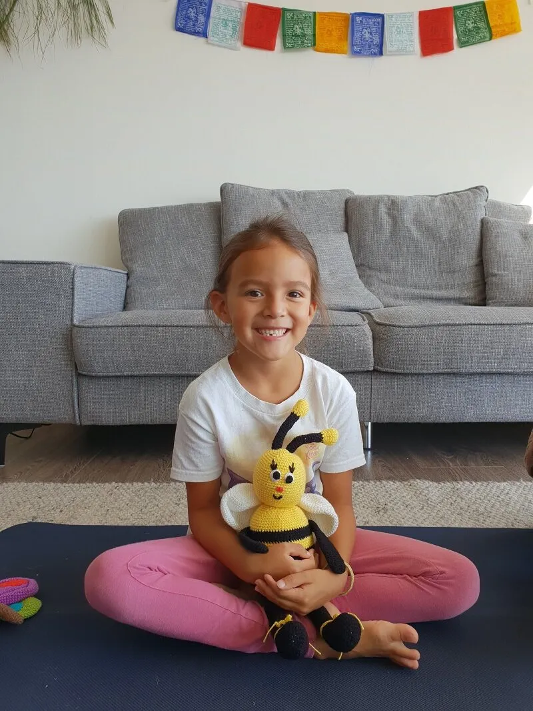

Es muy usual la queja de los padres acerca de que sus hijos pequeños se distraen con facilidad. Esto puede suceder por múltiples factores, pero lo cierto es que existe una solución y es el Mindfulness, metodología que te ayudará a mejorar la concentración de los más pequeños de la casa, además de traerles otros beneficios.
Para los niños, el Mindfulness es particularmente útil porque les enseña, desde pequeños, a vivir una vida plena, además de que les ayuda con el rendimiento académico, debido a que los enfoca en el presente y en sus responsabilidades del día a día. Aquí podrás ver estos 5 ejercicios, enfocados en el Mindfulness, que cambiarán la vida de tus pequeños.
Ejercicios de respiración con un compañero
En el Mindfulness la respiración diafragmática es importante; sin embargo, es posible que un niño no entienda esto, pero con este ejercicio podrá captar la esencia:
Pídele al niño que se acueste en el piso, boca arriba y con su peluche preferido encima de su estómago.
Indícale que se fije bien cómo el peluche sube y baja cada vez que inspira y exhala.
Para que controle más su respiración, puedes sugerirle que haga que el peluche se mueva más despacio respirando más lento.
El ejercicio de la abeja
Para continuar con ejercicios de respiración, es muy útil el uso de un ejercicio relacionados con el Yoga, como el de la abeja, el cual se puede practicar en grupo y ayuda a controlar las emociones. Solo debes hacer lo siguiente:
- Taparse las orejas con los dedos índice.
- Cerrar los ojos y, mientras, imitar el zumbido de las abejas (MMMMM).
Escuchar el silencio
Una forma de estimular la concentración en los niños es estimulándonos a prestar atención a lo que escuchan con un ejercicio muy simple, aquí te indicamos los pasos:
- Usa un cuenco tibetano o cualquier otro instrumento que emita vibraciones y que disminuya el sonido lentamente.
- Indica al niño que escuche el sonido hasta que deje de oírlo.
Ejercicio del movimiento
En el Mindfulness siempre hay que tener presente que la mente y el cuerpo están conectados; por eso, hay que prestar atención a lo que pasa en el cuerpo, esto se puede lograr en los niños con el siguiente ejercicio:
- Indícale al o los niños que salten durante 1 minuto en el mismo sitio.
- Posteriormente, pídeles que se sienten.
- Señálales que cierren sus ojos y pongan sus manos en el pecho; luego pregúntales qué notan en sus cuerpos, aquí podrás aprovechar de explicar lo que pasa.
Paseos conscientes
A casi todos los niños les encantan los paseos, especialmente en la naturaleza. Cuando camines con ellos en algún área boscosa, o con bastante naturaleza, haz lo siguiente:
- Anímalos a que busquen cosas que no hayan visto antes.
- Haz juegos tipo busca las diferencias.
- Pueden guardar silencio y prestar atención a todos los sonidos de la naturaleza.
- También pueden concentrarse en los olores que sientan alrededor; así como en las diferentes texturas de todo lo que encuentren y se pueda tocar.
- Ten seguridad de que con estos ejercicios tus hijos mejorarán su concentración y su actitud ante la vida.